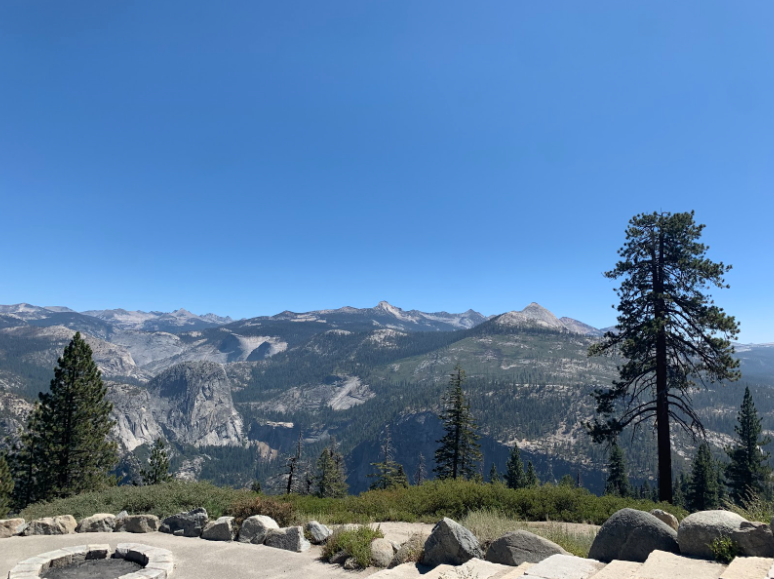

Yosemite for Stargazing: Beautiful Skies, Low Light Pollution, and Crowds
By: Jessica Savonije | Date: March 28, 2026
Rating: ★★★★☆ (4/5)
Access Link: Official Yosemite National Park Website

When I think of some of the best places I have visited for stargazing, Yosemite is easily near the top of my list. Yosemite National Park is already known for being one of the most beautiful national parks in the country, so it’s no surprise that it is also a great location for stargazing. In general, national parks, nature reserves, and parks are some of the best locations for stargazing. Looking at constellations in your backyard or from a parking lot can still be fun, but it does not really compare to being surrounded by mountains, trees, and open sky. The park is open 24 hours a day and contains countless locations that provide an excellent view of constellations. It is even possible on moonless nights to see the core of the Milky Way, which makes Yosemite stand out even more as a stargazing location.
One of the most important factors when evaluating the effectiveness of a stargazing location is looking at light pollution levels. A place can be beautiful during the day, but if there is too much artificial light at night, it is not going to be as effective for stargazing. In general, Yosemite is great for this. The park is largely free from significant light pollution and is far from any big cities or towns. That distance from urban areas makes a huge difference when it comes to how much of the night sky you can actually see. The lights in the park itself are minimal and mostly limited to infrastructure, and they are designed to avoid being too bright. This helps preserve the darkness of the sky and makes it easier to clearly see stars, constellations, and other celestial objects. That is one of the biggest reasons why Yosemite works so well as a stargazing destination.
The park is an incredible place, but it can get quite crowded. That is probably one of the biggest downsides. Stargazing spots that are popular and easily accessible are likely to get very crowded, especially if there is a celestial event happening, such as the meteor shower or an eclipse. Because Yosemite is already such a well-known destination, it attracts a lot of visitors even without a major event going on. The park is open all day, and while there are countless spots to stargaze, not all of them are necessarily accessible to anyone other than experienced hikers. Some of the better or quieter locations may take more effort to reach, which can be difficult for casual visitors. It’s important to account for the crowds and plan accordingly when going. Overall, Yosemite is still one of the best stargazing locations I have visited because of its low light pollution, beautiful scenery, and the overall experience it offers.
If you want to learn more about the park itself, the Yosemite trip planning page and the Yosemite night skies page are both helpful resources.